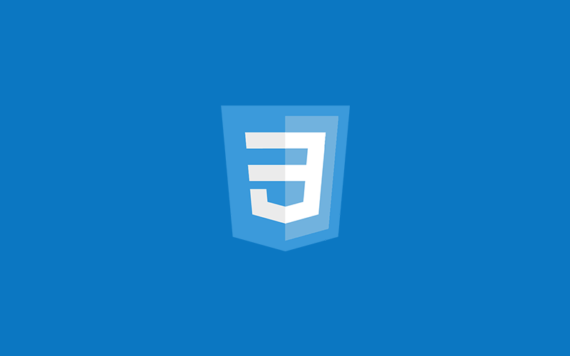

| Home | | | Marketing | | | Internet | | | Ganhar Dinheiro | | | WebMaster | | | Scripts | | | Software | | | Comércio Eletrônico | | | Downloads | | | Contato |
| DESTAQUES |
|  |
Montando layout com CSSCSS (Cascading Style Sheets) é uma linguagem de estilos utilizada para controlar a apresentação de documentos web escritos em HTML. Com o CSS, é possível definir cores, fontes, espaçamentos, layouts e muito mais, proporcionando um design visual atraente e consistente para as páginas da web. Os principais benefícios do CSS incluem a separação de conteúdo e estilo, permitindo manter o código HTML limpo e organizado, facilitando a manutenção. Além disso, a reutilização de estilos permite que um mesmo arquivo CSS seja utilizado em múltiplas páginas, promovendo consistência. A facilidade de manutenção é outro ponto positivo, já que alterar o design de um site torna-se mais simples ao modificar apenas o arquivo CSS. |
PROGRAMAÇÃO |
| Programação é o processo de escrever, testar e manter códigos que instruem um computador a realizar tarefas específicas. Através de linguagens como Python, JavaScript e C++, os programadores criam softwares, sites e aplicativos. A lógica de programação é essencial para desenvolver soluções eficientes e organizadas. Além disso, o pensamento computacional ajuda a resolver problemas complexos de forma estruturada. A prática constante é fundamental para aprimorar as habilidades. Programar envolve criatividade e raciocínio lógico. Dominar a programação abre diversas oportunidades no mercado de trabalho. |
WEBDESIGN |